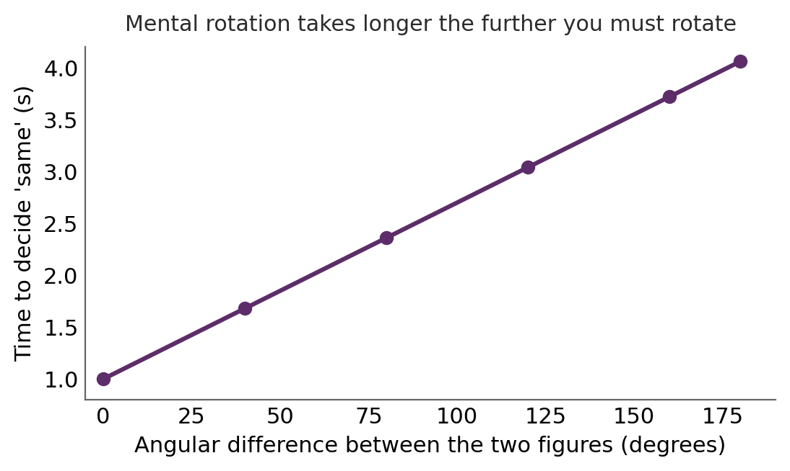
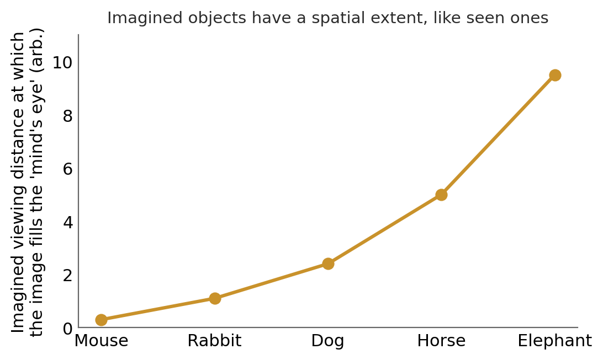
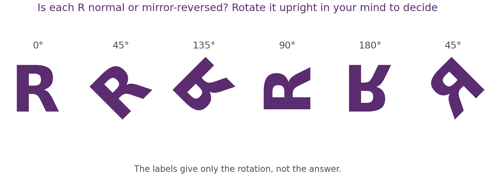
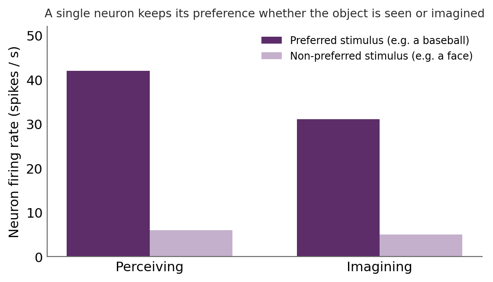
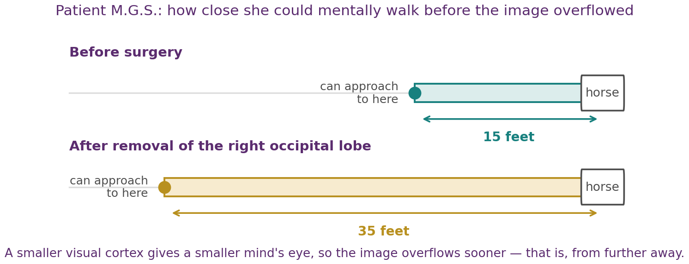
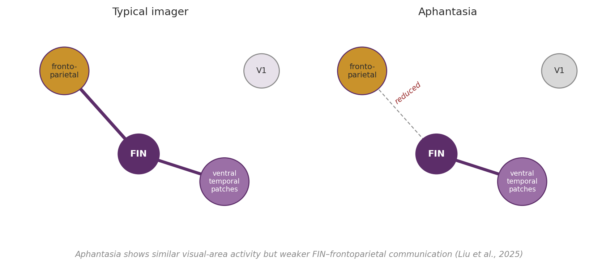
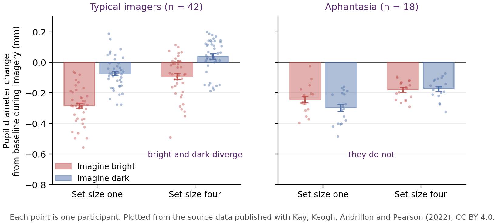

Chapter 8
Visual Imagery
Where this chapter sits
Chapter 7 left us with a question it could not answer. The semantic-network and connectionist models both represent knowledge in an abstract, non-pictorial code, and that seemed to cover everything we asked of them. But close your eyes and picture an elephant, then count its legs, and something happens that feels nothing at all like manipulating a sentence.
This chapter is about that experience. Visual imagery is the ability to see in the absence of anything to see, and it raises a question about format rather than content: is the mental image genuinely picture-like, or is it secretly propositional after all, with the picture merely how it feels from the inside? We ask what imagery is, how it relates to perception, where it lives in the brain, and what the striking case of people who have no imagery at all tells us about the difference between having information and having an experience.
Learning objectives
8.1 What visual imagery is
Visual imagery is seeing in the absence of a visual stimulus. More broadly, mental imagery is a sensory impression in the absence of sensory input, and it comes in every modality: the tune you can hear in your head, the imagined smell of coffee. It gives thought a dimension that purely verbal processing lacks.
The idea is ancient. Aristotle held that thinking is not possible without imagery, which frames a question the field is still arguing about: is thought possible without images? Imagery was a central topic for the introspectionists of the late nineteenth century, was then all but banished by behaviourism, which refused to study anything unobservable, and returned with the cognitive revolution. That history is worth keeping in view, because the chapter is partly a story about how a private experience was made measurable.
Two early findings still anchor the topic. Galton (1880) simply asked people to describe their mental image of their own breakfast table, and discovered something that surprised him: enormous individual differences, from people reporting photograph-like images to people reporting essentially none. Later surveys have repeatedly confirmed that range, and §8.5 returns to what it means.
Paivio (1963, 1965) then showed that imagery does real work. In a paired-associate task, concrete nouns that readily evoke an image, such as magician, were remembered far better than abstract ones such as discourse. His conceptual-peg hypothesis is that a concrete noun evokes an image that acts as a peg on which its associate can be hung; his later dual-coding theory generalised this, proposing that a concrete word is stored twice, verbally and as an image, giving retrieval two routes instead of one. Imagery is not idle scenery; it is a usable cognitive resource, which is why §8.8 can build practical techniques on it.
Visual versus spatial imagery
It helps to separate two things the word imagery runs together. Visual imagery represents how something looks: its shape, colour and visual detail. Spatial imagery represents where things are and how they are arranged, their locations and relations, without necessarily any visual quality at all.
The two come apart, and the clearest demonstration is that a congenitally blind person has no visual imagery yet can have excellent spatial imagery, reasoning fluently about layouts and routes. They also lean on partly different neural streams: the ventral “what” pathway for visual appearance and the dorsal “where” pathway for spatial relations.
Keep the distinction in hand, because it does real work twice more. Much of the classic evidence for the “spatial” nature of imagery, including image scanning, the mental walk and mental rotation, is strictly evidence about spatial imagery rather than visual experience. And aphantasia can spare spatial imagery while removing the visual experience, which is one reason an aphantasic person can still reason perfectly well about visual facts.
8.2 The imagery debate: pictures or propositions?
What is the format of a mental image? Two positions defined the debate for two decades.
Kosslyn (1980) argued that imagery is depictive, also called analogue or spatial: a mental image genuinely represents space with space, so that parts and distances in the image correspond to parts and distances in the thing, much as a picture does. Pylyshyn (1973) argued the opposite, that imagery is propositional: the experience of a picture is entirely real, but the underlying representation is a language-like set of descriptions, in the same currency as the semantic networks of Chapter 7, and the picture is a by-product rather than the vehicle.
Note what is and is not at issue. Nobody denies that imagery feels picture-like. The disagreement is about whether that feeling reflects the format of the representation doing the work, and the two accounts predict different signatures in behaviour, which is what makes the question answerable at all.
Mental rotation
The evidence that impressed most people favours the depictive view. Shepard and Metzler (1971) showed people pairs of three-dimensional block figures and asked whether they were the same shape or mirror images. The time to decide rose linearly with the angular difference between the two figures: the further you had to rotate one to check it against the other, the longer it took, exactly as if you were rotating a real object at a steady rate (Figure 8.1).

The linearity is the important part, not merely the slowing. A propositional system could be slower for harder problems for all sorts of reasons; what it does not obviously predict is a constant rate of transformation. This result also became a showcase for mental chronometry, the technique of reading out a hidden mental operation from the time it takes, which turned a private experience into a measurable one and which §8.6 returns to.
Image scanning and the mental walk
Kosslyn added two findings of the same shape. The first is that the mind's eye has a limited visual field, so you must mentally walk further away from a large animal than from a small one before its image stops overflowing that field (Kosslyn, 1978; Figure 8.2).

The second, the scanning result, deserves a closer look, because it is the cleanest single demonstration. Kosslyn, Ball and Reiser (1978) had people memorise a map of a fictional island dotted with landmarks, then imagine the map and mentally scan from one named landmark to another. The time to scan rose in direct proportion to the real distance between the landmarks on the original map.
Follow why that is awkward for the propositional account. A list of facts such as “the hut is north of the well” contains no information about how long it should take to get from one to the other, because a list is not traversed at a rate. A representation that preserves metric distance predicts exactly the observed timing. It is the spatial structure of the image, and not merely the facts it encodes, that appears to govern the clock.
Pylyshyn's reply
Pylyshyn's response is worth taking seriously, because it is a lesson in scientific caution that generalises well beyond imagery. He argued that these results need not reflect the format of the representation at all. Participants know how real objects behave, and may unconsciously reproduce that knowledge: taking longer for larger rotations because they know that rotation takes time, not because anything is actually rotating.
This is the tacit-knowledge critique (Pylyshyn, 1981), and its force lies in being almost unfalsifiable by behaviour alone. Any timing pattern that a depictive representation would produce is also a pattern a well-informed participant could produce by simulating what they expect. Settling the question therefore required looking inside the brain, where tacit knowledge has no obvious way to fake a retinotopic map. That is where the debate moved, and it is why §8.4 matters to §8.2 rather than merely following it.
8.3 Comparing imagery and perception
If imagery is depictive, it should behave like perception in fine detail, and in several ways it does. Because an imagined object has a size in the visual field, you are quicker to see the details of an imagined object you have scaled up large than one you have left small, just as with real viewing. Imagining a letter can even prime its later recognition, so an image can act on the perceptual system as a weak stimulus would.
But the resemblance is not complete, and the differences are as instructive as the similarities. Perception is automatic and stable: the scene stays put and needs no effort to maintain. Imagery is effortful and fragile: the image must be actively generated and it slips away the moment attention lapses. That is one reason mental images are much harder to reinterpret than percepts, as you will find if you try to re-parse an ambiguous figure from imagery alone rather than by looking at it again. Try the letters in Figure 8.3 and notice how much effort it takes to hold each one steady while you turn it.
In the dual-system language of this unit, perception is the Elephant's effortless delivery and sustained imagery is the Rider's laborious construction. The right conclusion is that imagery and perception share some, but not all, of their machinery, and the physiology now lets us say which parts.

8.4 Imagery in the brain
Several kinds of evidence converge on the conclusion that imagery reuses perceptual machinery, and they differ usefully in what each can establish.
Single neurons, fMRI and TMS
Single-neuron recordings in patients with epilepsy who had electrodes implanted to locate the source of their seizures (Kreiman et al., 2000) find neurons in the medial temporal lobe that fire selectively to a particular stimulus when it is seen, and fire again for the same stimulus when it is merely imagined, while staying silent for other stimuli. The neuron keeps its preference across seeing and imagining (Figure 8.4).

Functional MRI tells the same story at the population level: Le Bihan and colleagues (1993) found that primary visual cortex was activated both by a real visual stimulus and by an imagined one, in the same person. But both of these are correlations, and the tacit-knowledge critique of §8.2 survives a correlation: a participant simulating what they expect would also produce activity in visual areas.
TMS turns correlation into cause. Kosslyn and colleagues (1999) applied disruptive stimulation to early visual cortex and slowed both perception and imagery, which shows that this region is not merely switched on during imagery but is doing part of the work. If imagery were purely propositional, interfering with visual cortex should not have slowed it down.
The retinotopic argument
The strongest neural evidence for the depictive account is that imagery appears to use the spatial layout of the visual cortex itself. Early visual areas are retinotopic: adjacent points in the visual field map to adjacent points on the cortical sheet, with the centre of gaze represented at the occipital pole and the periphery further forward.
Kosslyn and colleagues (1995) found that this map is recruited during imagery in a size-appropriate way. Imagining a small object activated the posterior, foveal part of V1; imagining a large object that filled the mind's eye activated more anterior regions representing the periphery. The behavioural overflow of the mental-walk task thus has a literal cortical counterpart. This is hard for a purely propositional account to accommodate, because there is no obvious reason why a list of descriptions should be laid out across a retinotopic map according to an imagined object's size.
That said, the role of early visual cortex is genuinely contested, and §8.5 revisits it. It is engaged, especially for vivid and detailed imagery, but lesion and aphantasia evidence suggest it is not strictly necessary for the imagery experience.
Neuropsychology
Neuropsychology supplies the most vivid evidence of all. Patient M.G.S. (Farah et al., 1992) was tested on the mental-walk task before and after surgical removal of her right occipital lobe. Before the operation she could mentally approach to within about fifteen feet of an imagined horse before its image overflowed her visual field. Afterwards she could approach only to within about thirty-five feet (Figure 8.5).

Take a moment over the direction of that result, because it is easy to get backwards. Less visual cortex means a smaller mind's eye. A smaller field is filled by a given object sooner, which means from further away. So the distance at which the image overflows gets larger, not smaller. The size of the mind's eye was tied to the amount of visual cortex, in one patient, measured twice.
Two patients then give a double dissociation between imagery and perception. R.M. (Farah et al., 1988), with bilateral occipito-parietal damage, could draw an object placed in front of him but could not draw it from memory or imagery. C.K. (Behrmann et al., 1992), with visual agnosia, could not recognise or name a drawn object, even one he had drawn himself, yet could produce beautifully detailed drawings from imagery. Perception without imagery, and imagery without perception: by the double-dissociation logic of Chapter 4, imagery and perception cannot rely on exactly the same mechanisms.
Finally, unilateral neglect operates on images as it does on percepts. Bisiach and Luzzatti's (1978) patients, asked to imagine a familiar city square from one end, described only its right-hand side. Asked to imagine the same square from the opposite end, they described the side they had just omitted and omitted the side they had just described. The content of their knowledge was plainly intact, since they could report either half depending on the imagined vantage point. What was damaged was attention to one side of a representation, and the representation in question was an image.
8.5 Aphantasia and the neural basis of imagery experience
Galton's discovery of people with no mental image has a modern name. Zeman and colleagues (2015) coined aphantasia for the congenital absence of voluntary visual imagery; hyperphantasia, for imagery so vivid it approaches perception, was named later by the same group. Around four per cent of people report congenital aphantasia (Liu et al., 2025).
Aphantasia is a gift to the science, because it lets us ask an unusually sharp question. When someone can describe a banana's colour and shape perfectly well but reports seeing nothing in the mind's eye, what exactly is missing? The information is evidently there. The experience is not.
A spectrum, not a deficit
A landmark study of imagery vividness extremes took the continuum seriously rather than treating aphantasia as a lesion. Milton and colleagues (2021), working with Zeman's group, compared three groups defined by their scores on the Vividness of Visual Imagery Questionnaire: twenty-four people with aphantasia scoring 16 to 23 out of 80, twenty-five with hyperphantasia scoring 75 to 80, and twenty controls in the mid-range. The design matters, because a graded relationship across three groups is much stronger evidence than a difference between a deficit group and everyone else.
The central result is a dissociation, and it is the sharpest version of this chapter's theme. On standard laboratory memory tests, recall and recognition for recently presented visual and verbal material, the groups performed essentially the same. On autobiographical memory and on imagination tasks, the groups differed markedly and in order: hyperphantasic participants outperformed controls, who outperformed aphantasic participants.
Notice what that combination rules out. Aphantasia is not a memory impairment, or the laboratory tests would have shown it. What it affects is the kind of remembering that requires you to project yourself into a constructed scene, which is exactly the autonoetic, self-locating recollection that §4.4 identified as the distinctive feature of episodic memory. The imagination tasks show the same pattern, including imagining one's own future, which is precisely the link Chapter 4 proposed between remembering the past and constructing the future. Two quite separate literatures, memory and imagery, arrive at the same conclusion: recollection and imagination share machinery, and the sensory vividness of that machinery varies between people.
Three further findings are worth knowing, with a caution attached. Aphantasic participants reported more difficulty with face recognition, which fits a deficit in evoking visual detail. Autistic-spectrum traits were reported more commonly in the aphantasia group, and the personality inventory showed lower extraversion in aphantasia and higher openness in hyperphantasia. These are group-level correlations in self-selected samples, not diagnoses or destinies, and they should not be read as telling any individual anything about themselves.
One result in that study is a useful corrective to §8.2. The classic visual imagery tasks, of the mental-rotation and scanning kind, discriminated poorly between aphantasic and hyperphantasic participants. People who report no visual experience at all perform these tasks much like people whose imagery is nearly perceptual. That is further evidence that those tasks measure spatial imagery rather than visual experience, exactly as §8.1 warned, and it is why the objective measures in §8.6 were needed.
A high-resolution answer
Liu and colleagues (2025) then asked where in the brain that disparity arises. Using ultra-high-field 7-tesla fMRI, they had ten typical imagers and ten aphantasic individuals perform imagery and perception tasks across five domains: object shape, object colour, written words, faces and spatial relationships. The sample is small, so the important methodological point is that the pattern held for each individual participant rather than only in the group average. In typical imagers, imagery engaged left frontoparietal areas, the domain-preferring patches of ventral temporal cortex that also serve perception, and a domain-general region in the left fusiform gyrus that the group call the Fusiform Imagery Node, a candidate hub binding modality-specific content into a coherent image. Note the family resemblance to the hub-and-spoke model of §7.7: a transmodal hub integrating modality-specific contributors is becoming a recurring motif.
In aphantasic individuals the striking finding was not an absence of visual activity, which was largely present. It was reduced functional connectivity between the Fusiform Imagery Node and the frontoparietal areas (Figure 8.6). Alongside that, aphantasic participants showed stronger deactivation of foveal primary visual cortex during imagery, and greater activity in a right-hemisphere network including inferior frontal and supramarginal regions, which typical imagers deactivated on the same tasks. The information was still being computed. What was weakened was the communication that appears to turn that information into an experience.
Put the two studies side by side, because their convergence is what makes the conclusion solid. Milton and colleagues found stronger resting-state connectivity between prefrontal cortices and the visual network in hyperphantasia than in aphantasia, with no task at all. Liu and colleagues found reduced connectivity between a fusiform imagery hub and frontoparietal areas during imagery itself. Different samples, different scanners, different field strengths, and one measured at rest while the other measured during the task. When two designs with that little in common point at the same kind of coupling, the finding is much harder to explain away than either study alone would be, which matters given that Liu and colleagues had ten participants per group.

Two conclusions follow, and both matter well beyond imagery.
First, early visual cortex appears not to be necessary for the experience of imagery. Patients with V1 lesions can retain vivid imagery, and in aphantasia V1 is if anything more deactivated than in typical imagers. So the older and tidier idea that imagery is simply perception run backwards through V1 is too simple, and the retinotopic findings of §8.4 have to be read as showing that V1 contributes to imagery rather than that it generates the experience.
Second, conscious visual experience, whether perceived or imagined, seems to depend on the integration of high-level visual cortex with frontoparietal networks rather than on local activation of any one area. Bartolomeo and colleagues have framed aphantasia as a functional disconnection (Liu et al., 2025): the parts are intact, and the conversation between them is not. You can have all the information and still lack the experience, which is about as concrete a handle on the problem of conscious experience as cognitive neuroscience currently offers.
8.6 Measuring the mind's eye
A private experience becomes a science only when it can be measured from outside, and that is the thread running back to Galton and to behaviourism's refusal to study the unobservable. Imagery now has two elegant physiological handles.
The pupil
The pupillary light response, the automatic constriction of the pupil to brightness, turns out to follow imagined light too. Kay, Keogh, Andrillon and Pearson (2022) showed participants either one or four triangles of varying brightness, then, after a black screen long enough for any after-image to fade, cued them to imagine what they had just seen while staring at a fixation cross (Figure 8.7A). Pupil diameter was recorded throughout, and participants rated the vividness of each imagined image afterwards.
![The pupillometry task and the pupil record for the general population. (A) The trial sequence: a baseline screen, five seconds of perception, eight seconds of a black screen so the after-image can fade, six seconds of cued imagery, then a vividness rating. (B) Mean pupil diameter change from baseline across the trial, for imagined bright (red) and dark (blue) stimuli, with the imagery period enlarged at right. Reproduced from Kay, Keogh, Andrillon and Pearson (2022), eLife 11:e72484, Figure 1A–B, © the authors, CC BY 4.0. Cropped to panels A and B; not otherwise altered.](media/ch08_image7.png)
Their pupils constricted more when they imagined a bright object than when they imagined a dark one, and imagining four objects rather than one dilated the pupil overall, a marker of the extra cognitive load (Figure 8.7B). Two features of the record in Figure 8.7 are worth dwelling on, and neither is obvious from the claim alone.
First, look at the vertical scale. While the stimulus is on screen, bright and dark versions push the pupil roughly three quarters of a millimetre apart (the 1.5 mm peak is the dilation to the black rest screen); during imagery the two conditions separate by around two tenths of a millimetre at most. The imagery effect is real and reliable, but it is several times smaller than the perceptual one, which is a useful corrective to any picture of imagery as perception at reduced brightness. Whatever imagery is doing to the pupil, it is doing a small fraction of what light does.
Second, notice what the black screen in panel A is for. Without it, the pupil would still be recovering from the real stimulus when the imagery period began, and any effect could be dismissed as a lingering after-image. Eight seconds of darkness removes that objection before it can be made. This is the same methodological care that §8.2 said the field needed, applied at the level of a single trial.
The relationship to vividness has an instructive wrinkle. Within a participant, the pupil response tracked how vivid they rated each individual image, trial by trial. It also correlated with an independent objective measure of imagery strength, taken from a binocular-rivalry task. But it did not correlate with participants' scores on the standard imagery-vividness questionnaire, nor with their average vividness rating across the experiment. So the pupil agrees with another objective measure and with moment-to-moment reports, and disagrees with a questionnaire. That is a result about self-report as much as about imagery, and it is worth remembering whenever a study rests on people rating their own inner states.
The same experiment was then run with eighteen people with aphantasia, and the comparison is the reason the study matters.

In typical imagers the two conditions separate cleanly (Figure 8.8): imagining a bright object constricted the pupil by about 0.29 mm at set size one, against about 0.07 mm for a dark object, a difference of roughly 0.21 mm. In the aphantasic group the two conditions do not separate at all. At set size one the difference is if anything slightly reversed, and at set size four it is essentially zero. Eleven of the eighteen aphantasic participants had a difference score at or below zero, against four of the forty-two typical imagers.
Two controls make this a positive result rather than a failure to find anything. The aphantasic participants showed perfectly normal pupillary light responses to the real stimulus during the perception phase, so their pupils and the reflex arc are intact. And their pupils dilated normally with greater cognitive load, so they were engaging with the task rather than disengaging. What is missing is specific to imagery. That specificity is what allows the authors to describe this as the first physiological validation of aphantasia: not a report that some people say they see nothing, but a measurement showing that a reflex which tracks imagined brightness in everyone else does not do so in them.
Why this matters is worth stating carefully. The pupillary response is a reflex, not a report: participants cannot produce it to order and cannot suppress it to be helpful. So it sidesteps the fundamental problem with imagery research, which is that vividness ratings are self-reports about something nobody else can check. It also gives aphantasia an objective marker rather than leaving it a matter of what people say about themselves, which is what turns it from a reported peculiarity into a phenomenon with a physiology.
Mental chronometry
The second handle is the logic of Shepard and Metzler's rotation study. Because an analogue transformation takes time in proportion to its extent, reaction time reads out the transformation itself. It is an indirect measure, but it has the same virtue as the pupil: the participant is not being asked to describe the image, only to respond, and the timing does the reporting.
Motor imagery extends the same approach to action. Imagining a movement without making it obeys the timing laws of real movement, so that imagined and executed actions take similar durations, and it engages much of the same preparatory motor machinery. Transcranial magnetic stimulation makes that engagement visible: motor imagery raises corticospinal excitability in primary motor cortex, and it does so in proportion to the imagined effort, so imagining a forceful contraction drives the motor pathway more strongly than imagining a weak one (Helm et al., 2015). The imagined force level is, in effect, written into the excitability of the motor pathway.
Visual and motor imagery therefore look like two faces of one capacity: simulating an experience using the systems built for perceiving and acting. That framing also explains why motor imagery is useful in the sport and rehabilitation settings discussed in §8.8. Mentally rehearsing a movement is not merely thinking about it; it partly prepares it.
8.7 Ending the imagery debate
So, pictures or propositions? Pearson and Kosslyn (2015) argued that the question, posed as a winner-take-all contest, is the wrong one, and that the accumulated evidence now settles it in a way that gives each camp part of what it argued.
People demonstrably use both formats and can switch between them flexibly depending on the task. Depictive representations are real, functional and grounded in the visual system, which is Kosslyn's point vindicated. But they are not the only currency of thought, which is Pylyshyn's point vindicated. The productive move is to stop asking which format the mind uses and start characterising the heterogeneity of mental representation: which format is recruited when, by whom, and for what task.
Aphantasia fits this conclusion neatly, and is perhaps its best single illustration. An aphantasic person reasons about visual facts perfectly well by a non-depictive route, which is precisely why the deficit is one of experience rather than of information. If depictive representation were the only way to hold visual knowledge, aphantasia would be a knowledge deficit. It is not.
You may recognise the shape of this resolution from Chapter 7, where prototype and exemplar, and then embodiment and hub-and-spoke, resolved the same way. That is not a coincidence about imagery. It is a recurring feature of how these debates end.
8.8 Application: using imagery to remember
Because imagery is a durable, distinctive form of encoding, in exactly the sense Chapter 5 gave those terms, it is the engine of the classic mnemonics.
The method of loci, or memory palace, places vivid images of the to-be-remembered items at successive locations along a familiar route, then retrieves them by mentally walking the route. It works for at least three reasons drawn from this unit: it forces elaborative, imageable encoding; it recruits spatial as well as visual imagery, so the route supplies an organised retrieval structure; and walking the route in a fixed order supplies a self-generated retrieval cue for each item, which §5.5 showed to be worth roughly twice a cue supplied by someone else.
The pegword technique first learns a set of concrete pegs, such as one-bun and two-shoe, and then hangs each new item on a peg through a vivid interactive image. It exploits Paivio's conceptual peg directly, and note that the image must be interactive: an image of a bun and an image of a hat side by side is worth much less than an image of a bun wearing a hat.
A related and particularly powerful technique comes from Australian Aboriginal knowledge systems. Reser and colleagues (2021) taught medical students a place-based technique that binds information into a narrative of images tied to features of a real landscape, and found it at least as effective as, and on some measures better than, the classical method of loci for memorising unfamiliar lists. The addition of narrative is not decoration: a story imposes causal and temporal structure on the sequence, which is a second organising principle on top of place.
The lesson across all three is the lesson of this chapter. Turning information into a vivid, spatially organised image gives memory more holds on it, and more distinctive ones. Imagery is used deliberately in sport and in rehabilitation for the same underlying reason: mentally rehearsing a movement measurably improves later performance, because as §8.6 showed, imagining an action partly prepares it.
Chapter summary
Visual imagery is seeing without a stimulus. Galton (1880) found enormous individual differences, and Paivio (1963, 1965) showed imagery aids memory through dual coding, with the image acting as a conceptual peg.
Visual imagery represents how things look; spatial imagery represents where they are. The two dissociate, leaning on the ventral and dorsal streams respectively, which matters because much classic imagery evidence is really about spatial imagery.
The imagery debate set a depictive account (Kosslyn) against a propositional one (Pylyshyn). Mental rotation (Shepard & Metzler, 1971), image scanning (Kosslyn et al., 1978) and the mental walk suggest images preserve metric spatial structure, since a list of facts is not traversed at a rate.
Pylyshyn's tacit-knowledge critique shows behaviour alone cannot settle the format question, because a participant who knows how objects behave could produce the same timings. This is why the debate moved to the brain.
Imagery and perception share some but not all machinery. Perception is automatic and stable; imagery is effortful, fragile and harder to manipulate.
Four kinds of neural evidence converge: single neurons keep their stimulus preference when imagining; fMRI shows visual cortex active during imagery (Le Bihan et al., 1993); TMS to visual cortex slows imagery as well as perception (Kosslyn et al., 1999), making the contribution causal; and early visual cortex is recruited retinotopically according to imagined size (Kosslyn et al., 1995).
Neuropsychology ties imagery to visual brain structure: M.G.S.'s imagined visual field shrank after occipital surgery, so her images overflowed from further away; R.M. and C.K. form a double dissociation between imagery and perception; and neglect applies to images as to percepts (Bisiach & Luzzatti, 1978).
Aphantasia (Zeman et al., 2015) is the absence of the imagery experience, not of visual knowledge, and affects around four per cent of people. Imagery vividness is a spectrum, with hyperphantasia at the other end.
Milton and colleagues (2021) compared aphantasic, hyperphantasic and mid-range groups and found equivalent performance on standard laboratory memory tests but graded differences in autobiographical memory and imagination, hyperphantasia above controls above aphantasia. Aphantasia is therefore not a memory impairment; what it affects is the self-locating, scene-constructing recollection that Chapter 4 identified as distinctively episodic. Classic mental-rotation and scanning tasks discriminated poorly between the extremes, confirming that they measure spatial rather than visual imagery.
Liu and colleagues (2025) found largely preserved visual activity in aphantasia but reduced connectivity between the Fusiform Imagery Node and frontoparietal areas, stronger deactivation of foveal V1, and greater right-hemisphere frontoparietal activity. V1 is not necessary for the experience. Taken with Milton and colleagues' resting-state finding of stronger prefrontal-to-visual connectivity in hyperphantasia, two very different designs converge on the same kind of coupling, so conscious experience appears to depend on network integration rather than local activation.
Imagery can be measured objectively. The pupillary light response follows imagined brightness and is absent in aphantasia while perceptual and cognitive-load pupil responses stay intact (Kay et al., 2022); because it is a reflex rather than a report, it cannot be produced to order. The imagery effect is several times smaller than the perceptual one.
The pupil tracked vividness trial by trial within participants and agreed with an independent objective measure of imagery strength, but did not correlate with questionnaire scores or average vividness ratings between participants, which is a caution about any study resting on self-rated inner states.
In aphantasia the imagined-bright and imagined-dark conditions do not separate at all, while perceptual pupil responses and load-related dilation stay normal. The absence is specific to imagery, which is what makes it the first physiological validation of aphantasia rather than a null result.
Mental chronometry reads out analogue transformations from timing. Motor imagery obeys the timing laws of real movement and raises corticospinal excitability in proportion to imagined effort (Helm et al., 2015), so imagining an action partly prepares it.
Pearson and Kosslyn (2015) argue the debate should end: representation is heterogeneous, and people use depictive and propositional formats flexibly. Aphantasia illustrates the point, since visual reasoning survives without visual experience.
Imagery powers the method of loci, the pegword technique and place-based narrative mnemonics (Reser et al., 2021), and is used deliberately in sport and rehabilitation.
Self-check questions
Distinguish visual from spatial imagery, and explain why a congenitally blind person is the clearest evidence that the two are separable.
Why does the distinction between visual and spatial imagery complicate the claim that mental rotation shows images are “picture-like”?
Explain Paivio's conceptual-peg account, and say why concrete nouns should benefit from it more than abstract ones.
Shepard and Metzler found reaction time rose linearly with the angle of rotation. Explain why the depictive account predicts this, and why the linearity matters more than the slowing.
Why does a propositional list of facts fail to predict the image-scanning result of Kosslyn, Ball and Reiser? Be precise about what a list lacks.
State Pylyshyn's tacit-knowledge critique and explain why it cannot be defeated by behavioural evidence alone. What kind of evidence does it require instead?
Give one respect in which imagery resembles perception and one in which it clearly differs, and relate the difference to the Rider and the Elephant.
Explain how the TMS result of Kosslyn and colleagues (1999) does something the fMRI result of Le Bihan and colleagues (1993) cannot.
What does it mean to say early visual cortex is recruited retinotopically during imagery, and why is that pattern difficult for a propositional account to explain?
Patient M.G.S. could mentally approach a horse to within fifteen feet before surgery and only thirty-five feet afterwards. Explain why a smaller visual cortex produces a larger overflow distance rather than a smaller one.
R.M. could draw an object in front of him but not from memory; C.K. could not recognise objects but could draw them from imagery. What does this double dissociation show, and what would a single case have failed to establish?
In Bisiach and Luzzatti's patients, the side of the square that was omitted changed with the imagined vantage point. Why does that show the knowledge was intact and the deficit was one of attention?
What is aphantasia, and why is it more informative for theory than a simple report of low imagery vividness would be?
Milton and colleagues found that aphantasic, mid-range and hyperphantasic groups performed equally on standard laboratory memory tests but differed markedly on autobiographical memory and imagination. Explain what that combination rules out, and connect it to what §4.4 said about episodic memory and the self.
Why is a three-group design comparing both extremes against a mid-range control stronger evidence than comparing aphantasic participants with everyone else?
Classic mental-rotation and scanning tasks discriminate poorly between aphantasic and hyperphantasic people. Why is that awkward for using those tasks as measures of visual imagery, and which distinction from §8.1 does it vindicate?
Milton and colleagues measured connectivity at rest; Liu and colleagues measured it during an imagery task. Explain why agreement between two such different designs strengthens the conclusion more than a larger sample in either study alone would.
In aphantasia, visual areas are active during imagery but connectivity between the Fusiform Imagery Node and frontoparietal networks is reduced. Why does this support the view that experience depends on integration rather than local activation? What does it imply about V1, and about the retinotopic findings in §8.4?
How can the pupil be used as an objective index of imagery, what would you expect in an aphantasic participant, and why is a reflex better evidence here than a vividness rating?
In Kay and colleagues' task an eight-second black screen separated perception from imagery. What objection does that interval rule out, and why would the result be much weaker without it?
The imagery pupil response is several times smaller than the perceptual one. Does that weaken the claim that imagery recruits perceptual machinery? Argue both ways.
The pupil response tracked trial-by-trial vividness ratings and an objective rivalry measure, but not questionnaire scores or average vividness ratings. What does that pattern suggest about the limits of questionnaire measures of inner experience?
Aphantasic participants showed no imagery pupil response but normal perceptual pupil responses and normal load-related dilation. Explain why those two control findings are what turn an absence into evidence, and what could have been concluded without them.
Explain what motor imagery adds to the case that imagery reuses the machinery of perception and action. What does the relationship between imagined effort and corticospinal excitability show?
Pearson and Kosslyn say the imagery debate should end. What do they mean, whose position is vindicated, and how does aphantasia fit their conclusion?
Explain why the method of loci works, using at least two ideas from this chapter and one from Chapter 5.
Why must a pegword image be interactive rather than simply two images side by side?
The place-based technique studied by Reser and colleagues adds narrative to location. What does narrative contribute that place alone does not?
Model answers to these questions are in the answers companion, Chapter 8. Try each question yourself before you look.
Attribution and licence
This chapter is licensed under a Creative Commons Attribution-NonCommercial-ShareAlike 4.0 International (CC BY-NC-SA 4.0) licence. Because only one open textbook in the set carries an imagery chapter, much of this chapter is author-written from the primary literature. Changes to adapted material include restructuring into the unit's teaching scaffold, rewriting for voice and level, and writing the aphantasia, measurement and debate-resolution sections in full, with original figures.
Graham and Griffin (2025), Cognitive Psychology, Chapter 5, sections 5.5–5.8 (Central New Mexico Community College). CC BY-NC-SA 4.0. The only OER imagery source, and the base for the definition of imagery, Galton and individual differences, aphantasia and hyperphantasia, Paivio, and the pictorial-versus-propositional framing.
Milton and colleagues (2021), Cerebral Cortex Communications. CC BY 4.0. Adapted for the three-group behavioural and resting-state evidence in §8.5.
Liu and colleagues (2025), Cortex. CC BY 4.0. Adapted for the imagery-network material in §8.5, the aphantasia prevalence figure, and Figure 8.6.
Kay, Keogh, Andrillon and Pearson (2022), eLife. CC BY 4.0. Adapted for §8.6. Figure 8.7 of this chapter reproduces Figure 1, panels A and B, of that article under the CC BY licence, cropped to those two panels and otherwise unaltered; the original is © the authors. Figure 8.8 is an original figure plotted from that article's own published source data for its Figures 1C and 3B, also under CC BY 4.0.
Reser and colleagues (2021), PLOS ONE. CC BY 4.0. Adapted for the place-based mnemonic material in §8.8.
Cited but not adapted: Pearson and Kosslyn (2015) and Helm, Marinovic, Krüger, Munzert and Riek (2015) are cited in the ordinary way, with nothing reproduced.
All other studies cited in this chapter are described from standard knowledge in the author's own wording, with no source text adapted.
Full bibliographic details for every work cited in this chapter, including the sources named above, are given in the References below.
References
Behrmann, M., Winocur, G., & Moscovitch, M. (1992). Dissociation between mental imagery and object recognition in a brain-damaged patient. Nature, 359(6396), 636–637. https://doi.org/10.1038/359636a0
Bisiach, E., & Luzzatti, C. (1978). Unilateral neglect of representational space. Cortex, 14(1), 129–133. https://doi.org/10.1016/S0010-9452(78)80016-1
Farah, M. J., Levine, D. N., & Calvanio, R. (1988). A case study of mental imagery deficit. Brain and Cognition, 8(2), 147–164. https://doi.org/10.1016/0278-2626(88)90029-X
Farah, M. J., Soso, M. J., & Dasheiff, R. M. (1992). Visual angle of the mind's eye before and after unilateral occipital lobectomy. Journal of Experimental Psychology: Human Perception and Performance, 18(1), 241–246. https://doi.org/10.1037/0096-1523.18.1.241
Galton, F. (1880). Statistics of mental imagery. Mind, 5(19), 301–318. https://doi.org/10.1093/mind/os-V.19.301
Graham, R., & Griffin, S. (2025). Cognitive psychology. Central New Mexico Community College. https://nmoer.pressbooks.pub/cognitivepsychology/
Helm, F., Marinovic, W., Krüger, B., Munzert, J., & Riek, S. (2015). Corticospinal excitability during imagined and observed dynamic force production tasks: Effortfulness matters. Neuroscience, 290, 398–405. https://doi.org/10.1016/j.neuroscience.2015.01.050
Kay, L., Keogh, R., Andrillon, T., & Pearson, J. (2022). The pupillary light response as a physiological index of aphantasia, sensory and phenomenological imagery strength. eLife, 11, Article e72484. https://doi.org/10.7554/eLife.72484
Kosslyn, S. M. (1978). Measuring the visual angle of the mind's eye. Cognitive Psychology, 10(3), 356–389. https://doi.org/10.1016/0010-0285(78)90004-X
Kosslyn, S. M. (1980). Image and mind. Harvard University Press.
Kosslyn, S. M., Ball, T. M., & Reiser, B. J. (1978). Visual images preserve metric spatial information: Evidence from studies of image scanning. Journal of Experimental Psychology: Human Perception and Performance, 4(1), 47–60. https://doi.org/10.1037/0096-1523.4.1.47
Kosslyn, S. M., Pascual-Leone, A., Felician, O., Camposano, S., Keenan, J. P., Thompson, W. L., Ganis, G., Sukel, K. E., & Alpert, N. M. (1999). The role of area 17 in visual imagery: Convergent evidence from PET and rTMS. Science, 284(5411), 167–170. https://doi.org/10.1126/science.284.5411.167
Kosslyn, S. M., Thompson, W. L., Kim, I. J., & Alpert, N. M. (1995). Topographical representations of mental images in primary visual cortex. Nature, 378(6556), 496–498. https://doi.org/10.1038/378496a0
Kreiman, G., Koch, C., & Fried, I. (2000). Imagery neurons in the human brain. Nature, 408(6810), 357–361. https://doi.org/10.1038/35042575
Le Bihan, D., Turner, R., Zeffiro, T. A., Cuénod, C. A., Jezzard, P., & Bonnerot, V. (1993). Activation of human primary visual cortex during visual recall: A magnetic resonance imaging study. Proceedings of the National Academy of Sciences of the United States of America, 90(24), 11802–11805. https://doi.org/10.1073/pnas.90.24.11802
Liu, J., Zhan, M., Hajhajate, D., Spagna, A., Dehaene, S., Cohen, L., & Bartolomeo, P. (2025). Visual mental imagery in typical imagers and in aphantasia: A millimeter-scale 7-T fMRI study. Cortex, 185, 113–132. https://doi.org/10.1016/j.cortex.2025.01.013
Milton, F., Fulford, J., Dance, C., Gaddum, J., Heuerman-Williamson, B., Jones, K., Knight, K. F., MacKisack, M., Winlove, C., & Zeman, A. (2021). Behavioral and neural signatures of visual imagery vividness extremes: Aphantasia versus hyperphantasia. Cerebral Cortex Communications, 2(2), Article tgab035. https://doi.org/10.1093/texcom/tgab035
Paivio, A. (1963). Learning of adjective-noun paired associates as a function of adjective-noun word order and noun abstractness. Canadian Journal of Psychology, 17(4), 370–379. https://doi.org/10.1037/h0083277
Paivio, A. (1965). Abstractness, imagery, and meaningfulness in paired-associate learning. Journal of Verbal Learning and Verbal Behavior, 4(1), 32–38. https://doi.org/10.1016/S0022-5371(65)80064-0
Pearson, J., & Kosslyn, S. M. (2015). The heterogeneity of mental representation: Ending the imagery debate. Proceedings of the National Academy of Sciences of the United States of America, 112(33), 10089–10092. https://doi.org/10.1073/pnas.1504933112
Pylyshyn, Z. W. (1973). What the mind's eye tells the mind's brain: A critique of mental imagery. Psychological Bulletin, 80(1), 1–24. https://doi.org/10.1037/h0034650
Pylyshyn, Z. W. (1981). The imagery debate: Analogue media versus tacit knowledge. Psychological Review, 88(1), 16–45. https://doi.org/10.1037/0033-295X.88.1.16
Reser, D., Simmons, M., Johns, E., Ghaly, A., Quayle, M., Dordevic, A. L., Tare, M., McArdle, A., Willems, J., & Yunkaporta, T. (2021). Australian Aboriginal techniques for memorization: Translation into a medical and allied health education setting. PLOS ONE, 16(5), Article e0251710. https://doi.org/10.1371/journal.pone.0251710
Shepard, R. N., & Metzler, J. (1971). Mental rotation of three-dimensional objects. Science, 171(3972), 701–703. https://doi.org/10.1126/science.171.3972.701
Zeman, A., Dewar, M., & Della Sala, S. (2015). Lives without imagery – Congenital aphantasia. Cortex, 73, 378–380. https://doi.org/10.1016/j.cortex.2015.05.019